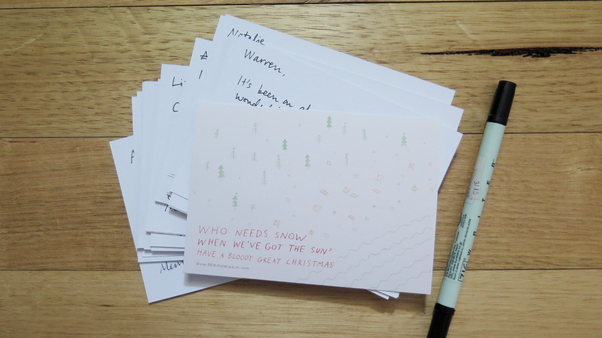

Christmas cards
I designed and printed Christmas card in the style of "Dear Andrew Kim" to everybody in the office. I did this because 1) to show that I am also a freelance designer outside of work (marketing) and 2) I thought it would be a thoughtful action and people would appreciate it. Okay, fine. And 3) I wanted to be slightly more liked.
So I ended up writing around 40 Christmas cards for everybody in our office. I wrote it to people that I talk to everyday and to those I've only talked to a couple of times. I thought it would be a quick exercise. I was wrong. It took solid 3-4 hours to come up with a personal message to each people that I was writing a card to.
However, it was definitely worth the investment of time and money. I thought that people would just say "thank you" and carry about with their work. However it was incredible to see how much of an effect these Christmas cards had on people. I truly felt the power of words then. Even the director of the portfolio that I work in came up to me to personally thanked me and also told me that it made his day.
I tried to address two things for each message that I wrote to make it meaningful and personal.
-
Why does this person inspire you? For example: They are hardworking, or they have a lot of life experiences
-
What is a positive thing you notice about them? For example: They make them laugh
-
Any memory that you share together even if its trivial? For example: They were friendly and approachable when I first met them.
Also don't be afraid to be honest and meaningful. To the director of Building, I told him that he is the most liked and respected person in the organisation and that I learn something new every time I talk to him. To my manager, I told him that he is amazing at what he does and he inspires me to work harder.
Maybe because I am surrounded by such positive and inspiring people that I found it easier to write a meaningful message to each of them.
I think occasions like Christmas and birthdays shouldn't be used to exchange useless gifts that just adds clutter to your house. Use this occasion to say thank you and talk about the positive things that you've always been wanting to say.